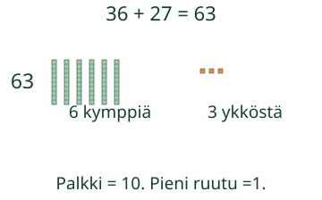
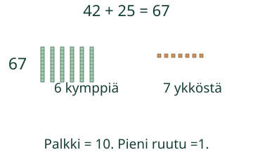

Aava kerää 36 tarraa ja saa 27 lisää. Laske yhteinen määrä.
Voit vastata suoraan. Malli ja vihje ovat apua.
Miksi vaihdetaan kymppi?
Kokoa nappeja kymmenen ryhmiin. Pitkä palkki näyttää 10 yhtä suurta ruutua: se on yksi kymppi. Pieni ruutu on yksi.
36 + 27
Kympit:30 + 20 =50. Ykköset:6 + 7 =13. Kymmenen ykköstä vaihdetaan yhteen kymppiin. Jää 3 ykköstä. 50 + 10 + 3 =63. Vaihto ei lisää eikä hävitä mitään.

Aina ei synny uutta kymppiä
42 + 25 =67. Neljä ja kaksi kymppiä tekee kuusi kymppiä. Kaksi ja viisi ykköstä tekee seitsemän. Ykkösiä on alle 10.

Ennakoi: tuleeko 28 + 2:ssa uusi kymppi?
Katso ajatus
Kyllä.8 + 2 =10. Kahdesta kympistä ja 10 ykkösestä tulee 3 kymppiä:30.
Myös sata kuuluu mukaan
68 + 32 =100. Kympit tekevät 90 ja ykköset 10. Kymmenen kymppiä on sata. Nollan lisääminen ei muuta määrää:73 + 0 =73.
Lisätutkimus ja paperilla
Piirrä tai sido 10 napin ryhmiä. Vaihda yksi ryhmä irtonaisiksi ja takaisin. Miten tiedät, että määrä pysyy samana? Kokeile sama lasku toisella tavalla.
Opettajalle: tavoite ja rajat
Luokat 1–2, yhteenlasku kokonaisluvuilla 0–100, summa enintään 100. Required AND: M-ADD-20 ja M-PLACE-03. M-MENTAL-01 on vahvaa tukea, ei uusi pääsyportti.10 ykköstä vaihdetaan yhteen kymppiin;100 esitetään 10 kymppinä. Malli näyttää yhteen kokoamisen ja vaihdon käsin askeltaen, ei mitattua aikaa. Kaikki summan säilyttävät kymppi/ykkösjaot hyväksytään lisätehtävässä:5 kymppiä ja 13 ykköstä sekä 6 kymppiä ja 3 ykköstä ovat molemmat 63. Tavalliseen vastauskenttään pyydetään lopputulos; mitään menetelmää ei pakoteta.
Aikuinen voi lukea ohjeen. Käytä 100 nappia ja kymmenen ryhmiä. Älä vaadi esineiden nimeämistä, puhetta tai joka napin kosketusta. Peitä ratkaisu ja pyydä lapsen omaa tapaa. Harjoitusten palaute koskee vain nykyistä paikallista vastausta, ei itsenäistä, viivästettyä tai formaalia hallintaa. Ei ajanottoa, henkilöhistoriaa tai vaikuttavuusväitettä. Tarkistin hyväksyy samanarvoiset etunollat, plusmerkin ja desimaaliosan nollat; ei pyöristä. Enintään 128 merkkiä/kenttä.
Lopuksi: miksi kympin kokoaminen ei muuta laskun 28 + 17 määrää?